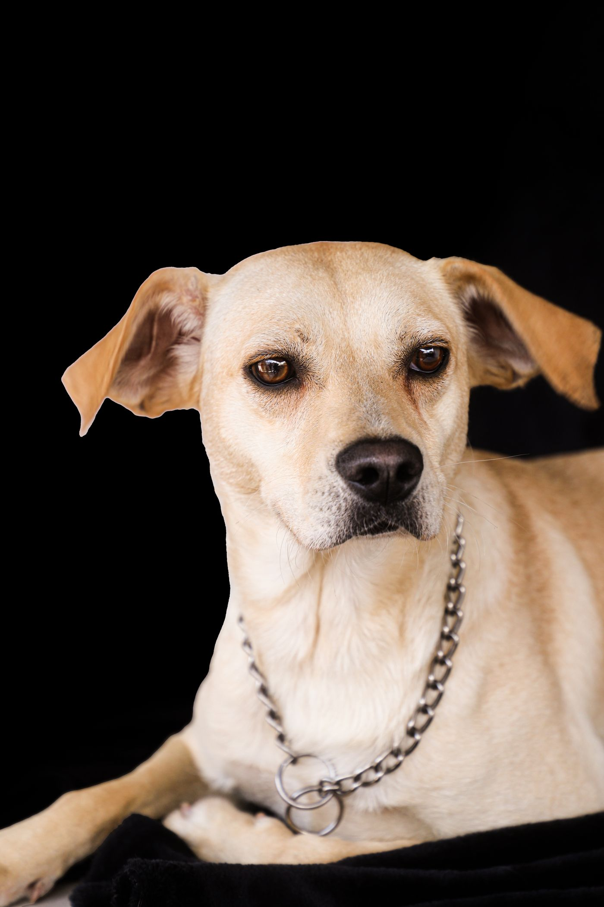
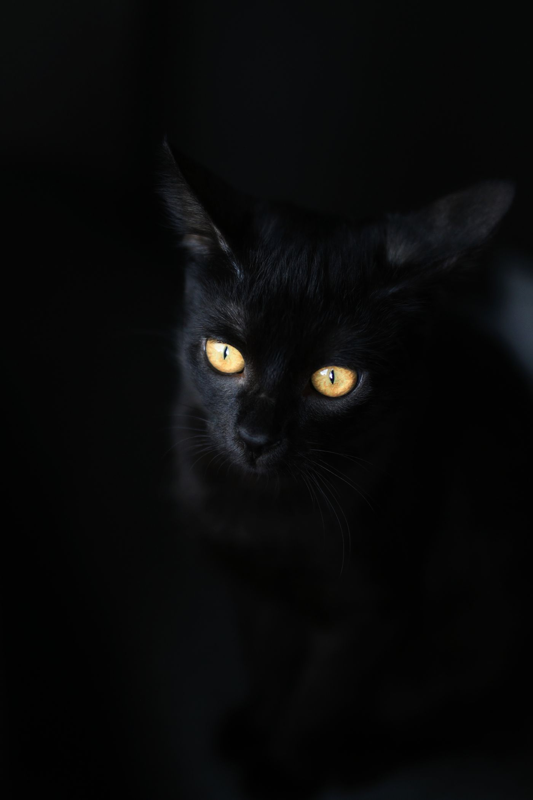
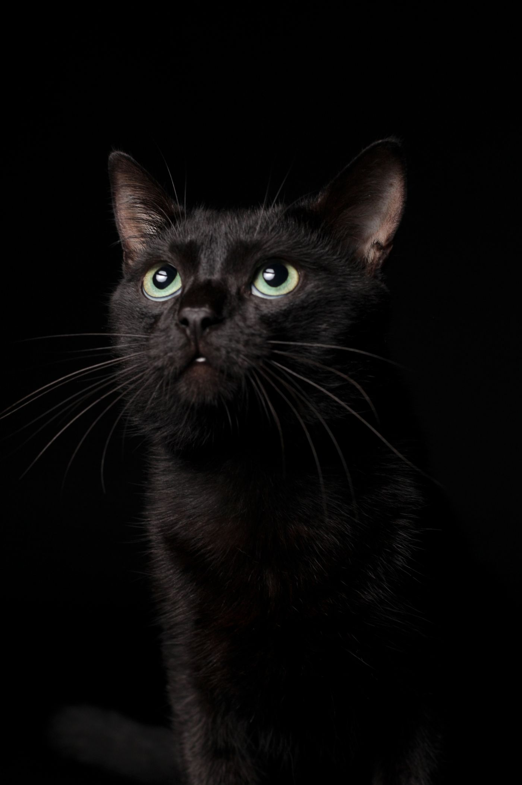

Przychodnia weterynaryjna · Katowice
Nowoczesna opieka weterynaryjna dla psów i kotów w samym sercu Katowic. Profilaktyka, diagnostyka i leczenie, z czasem na rozmowę i bez zbędnego stresu.
01 Usługi
Wszystko w jednym miejscu
-
01
Konsultacje i badania
Dokładne badanie, rozmowa o objawach i jasny plan leczenia.
-
02
Szczepienia i profilaktyka
Kalendarz szczepień, wścieklizna, ochrona przed pasożytami.
-

Psy każdej wielkości
Od szczeniaka po seniora, od yorka po owczarka.
-
03
Czipowanie i paszporty
Czip, rejestracja i paszport na wspólne wyjazdy.
-
04
Diagnostyka
Badania krwi i moczu, skóra, uszy, układ pokarmowy.
-
05
Zabiegi
Kastracja i sterylizacja, drobne zabiegi, opatrywanie ran.
-
06
Opieka nad seniorem
Częstsze przeglądy, badania krwi, stawy, dieta i komfort.

Cat friendlyKot to nie mały pies. Badamy go w jego tempie.
02 Koty
Spokój dla kotów, mniej stresu dla Ciebie
Koty źle znoszą wizyty u weterynarza. Dlatego robimy wszystko, żeby było spokojnie, cicho i bez pośpiechu.
- Bez pośpiechuDajemy kotu czas, żeby sam wyszedł z transportera.
- Łagodne podejścieDelikatne trzymanie i tylko niezbędne procedury.
- Porady na drogęJak przyzwyczaić kota do transportera i ograniczyć stres przed wizytą.
03 Kalendarz zdrowia
Co i kiedy robić?
Wybierz etap życia swojego pupila i zobacz, o czym warto pamiętać.
Dobry
startPierwsze miesiące decydują o zdrowiu na lata.
Ogólne wskazówki. Dokładny plan ustalamy na wizycie, indywidualnie dla Twojego zwierzaka.
04 Wizyta
Trzy kroki, zero stresu
- 01
Umawiasz termin
Telefonicznie albo przez formularz. Oddzwonimy i dobierzemy dogodną godzinę.
- 02
Badanie bez pośpiechu
Rozmawiamy o objawach i nawykach, potem dokładnie badamy pupila.
- 03
Jasny plan
Diagnoza, plan leczenia i zalecenia na piśmie. Wiesz, co dalej i ile to kosztuje.
05 Nasza obietnica
Traktujemy Twojego zwierzaka tak, jak swojego. Z cierpliwością, uwagą i szacunkiem.

06 Pytania
Masz pytanie?
Tu znajdziesz najczęstsze. Jeśli Twojego brakuje, zadzwoń lub napisz.
Gdzie jest przychodnia weterynaryjna przy ul. Chrobrego w Katowicach?
Przychodnia mieści się w Katowicach przy ul. Bolesława Chrobrego. Przyjmujemy psy i koty: konsultacje, szczepienia, czipowanie, diagnostyka, zabiegi i opieka nad seniorami.
Czy trzeba umówić wizytę?
Zalecamy wcześniejsze umówienie wizyty telefonicznie lub przez formularz. Dzięki temu skracamy czas oczekiwania i mamy czas na spokojne badanie.
Jak przygotować kota do wizyty?
Zostaw transporter otwarty w domu kilka dni wcześniej, włóż do niego kocyk i przysmaki. W dniu wizyty przykryj transporter ręcznikiem, żeby kot czuł się bezpieczniej.
Jak często badać starszego psa lub kota?
U seniorów zwykle zalecamy częstsze przeglądy niż raz w roku, z badaniami krwi. Plan ustalamy indywidualnie na wizycie.
Czy wyrobicie paszport dla psa lub kota?
Tak. Wszczepiamy czip, rejestrujemy zwierzę i wydajemy paszport potrzebny do podróży za granicę.
07 Kontakt
Umów wizytę. Oddzwonimy.
Zgłoszenie wizyty
Godziny przyjęć
Godziny przykładowe – do potwierdzenia